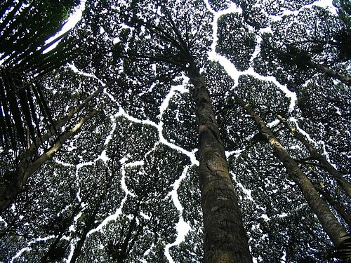

For the album by Trash Boat, see Crown Shyness (album).
Crown shyness (also canopy disengagement[1], canopy shyness[2] or inter-crown spacing[3] )is a phenomenon observed in some tree species, in which the crowns of fully stocked trees do not touch each other, forming a canopy with channel-like gaps. [4][5]. The phenomenon is most prevalent among trees of the same species, but also occurs between trees of different species. [6][7] There exist many hypotheses as to why crown shyness is an adaptive behavior, and research suggests that it might inhibit spread of leaf-eating insect larvae. [8]

The exact physiological basis of crown shyness is not certain. [6] The phenomenon has been discussed in scientific literature since the [9] 1920s. The variety of hypotheses and experimental results might suggest that there are multiple mechanisms across different species, an example of convergent evolution. [citation needed]
Some hypotheses contend that the interdigitation of canopy branches leads to "reciprocal pruning" of adjacent trees. Trees in windy areas suffer physical damage as they collide with each other during winds. As the result of abrasions and collisions, there is an induced crown shyness response. Studies suggest that lateral branch growth is largely uninfluenced by neighbours until disturbed by mechanical abrasion. [10] If the crowns are artificially prevented from colliding in the winds, they gradually fill the canopy gaps. [11] This explains instances of crown shyness between branches of the same organism. Proponents of this idea cite that shyness is particularly seen in conditions conducive to this pruning, including windy forests, stands of flexible trees, and early succession forests where branchesare flexible and limited in lateral movement. [6][12] By this explanation, variable flexibility in lateral branches has a large bearing on degree of crown shyness.